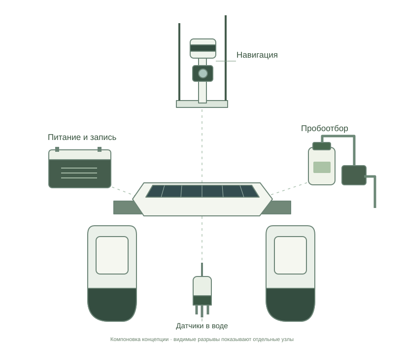

План до выхода на воду
Точку отбора и путь возвращения согласуем до запуска.
Безэкипажный катамаран для отбора проб воды
там, где трудно добраться с берега.
Под наблюдением оператора.
 SuBulaq USV / Концепция в разработке
SuBulaq USV / Концепция в разработке
Нужна проба в удалённой точке, а доступ с берега ограничен.
Проверяем, где катамаран поможет выполнить такой выезд.
Пробы в удалённых от берега точках и повторные проходы по одному маршруту. Проверяем, где катамаран поможет в полевой работе.
Как планируем работатьСравните выезд к точке, стационарный пост и концепцию SuBulaq.
| Задача | Ручной / лодочный отбор | Стационарный пост | SuBulaq — концепция |
|---|---|---|---|
| Когда применять | Выезд к выбранной точке | Наблюдения в постоянном месте | Рейсы в труднодоступные точки |
| Работа с пробой | Отбор специалистом | Зависит от оснащения поста | Одна ёмкость за рейс в первом пилоте |
| Лабораторный анализ | После передачи пробы | По программе наблюдений | В лаборатории по согласованной методике |
| Что проверяем в пилоте | Текущие время и затраты | Применимость к выбранной точке | Пригодность проб, возврат, время и затраты |
Выбираем способ под задачу. В пилоте сравним время, затраты и пригодность проб с текущим способом отбора.
Точку отбора и путь возвращения согласуем до запуска.
Пробу и измерения связываем с точкой и временем.
Один маршрут для сопоставления наблюдений.
В пилоте проверим связь и возврат аппарата с пробой.
Прокрутите: от общей компоновки
к каждому узлу крупным планом.

Навигация ведёт по маршруту, датчики измеряют воду, отдельный модуль отбирает пробу. Аккумулятор питает бортовые системы.
Выберите узел ниже, чтобы узнать, где он находится и как работает.
Предлагаемая компоновка. Глубину установки датчиков и требования к пробе уточним для пилота.
Оператору нужны маршрут и состояние аппарата, исследователю — измерения с привязкой к точкам. Посмотрите, как это устроено в программном прототипе.
Пример скрининга: pH, мутность, температура и электропроводность. Набор датчиков для пилота ещё уточняется.
| Точка | pH | Мутность, NTU | Температура, °C | Электропроводность, мкСм/см |
|---|
Значения придуманы для демонстрации интерфейса. Это не результаты обследования.

Четыре точки маршрута, время и четыре показателя воды. Скачайте учебный набор измерений в формате CSV.
Скачать пример CSVДемонстрационный файл. Не является лабораторным протоколом.
Показан программный прототип. Интеграция с аппаратом и работа на воде ещё предстоят. Четыре точки в примере — измерения по маршруту; для первого пилота планируем одну ёмкость с пробой за рейс.
Команда студентов
Cardiff University Kazakhstan.
Программный прототип уже подготовлен. Следующий шаг — сборка аппарата и проверка на воде.
Партнёрства
Конструкция катамарана
Программное обеспечение
Приложение и платформа
Короткие рейсы на спокойном защищённом участке пресной воды. Согласуем задачу, требования к пробам и критерии успеха.
Выберем точку, куда трудно добраться с берега, маршрут и условия доступа. Зафиксируем, как пробы отбирают сейчас.
Предложить площадкуС лабораторией определим объём, глубину, хранение и передачу пробы. Проверим пригодность проб и сравним измерения с контрольными.
Обсудить требованияОценим возврат, связь, надёжность, время и стоимость принятой лабораторией пробы. Критерии успеха согласуем до испытаний.
Обсудить пилотПланируем передать карту маршрута, журнал измерений и проб, сравнение с контрольными результатами и отчёт о времени, затратах и доработках. Формат услуги, стоимость и экономию проверим вместе с партнёром.
Есть программный прототип приложения и веб-демонстрация. Интеграция с аппаратом и работа на воде ещё предстоят. Ориентир для подбора компонентов, сборки и первых испытаний — 8–12 недель после согласования требований и доступности компонентов.
Планируем короткие рейсы на спокойном защищённом участке пресной воды. Проверим связь, возвращение аппарата, повторяемость измерений и пригодность проб для лаборатории. Площадку и критерии успеха согласуем с партнёром.
Каспий рассматриваем как возможное направление применения. Работа в солёной воде, при ветре и волнении требует отдельной инженерной проверки и сметы. Морские испытания пока не проводились.
Для первого пилота планируем одну ёмкость за рейс. Глубину, объём, хранение и передачу пробы согласуем с лабораторией. Пробу свяжем с координатами, временем и результатом анализа.
pH, температура, электропроводность и мутность — для предварительного скрининга. Состав датчиков выбираем под задачу; показания сопоставим с контрольными результатами. Бортовые датчики не заменяют лабораторный анализ.
Первый этап посвящён пробам воды. Для донных отложений потребуется отдельный модуль и проверка грузоподъёмности. Такая функция пока не реализована.
Обсуждаем оба варианта с потенциальными пользователями. Формат обследования как услуги и готовность платить ещё проверяем. Цена и экономия не подтверждены; условия пилота согласуем отдельно.
Расскажите, где находятся точки отбора, как вы добираетесь до них сейчас и какие анализы нужны. Ищем исследовательскую команду, лабораторию или подрядчика с конкретной задачей, а также площадку и технических партнёров.

Расскажите о точке отбора, текущем способе работы
и требованиях к пробам.